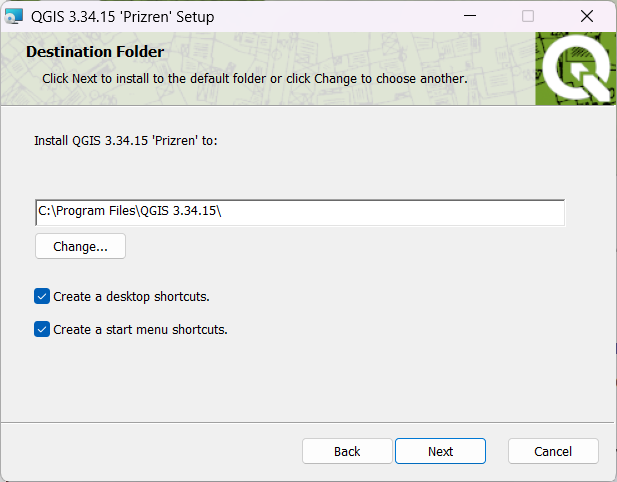

Основы геоинформатики: практикум в QGIS
2022-02-04
Общие сведения
Если вы ищете практикум на основе ArcGIS, то он находится тут.
Учебные материалы
Учебник: Лурье И. К. Геоинформационное картографирование. Методы геоинформатики и цифровой обработки космических снимков: Учебник для вузов. 2-е изд. – М.: КДУ, 2010. PDF
Пособие: Лурье И. К., Самсонов Т. Е. Информатика с основами геоинформатики. Часть 2. Основы геоинформатики. Учебное пособие. Москва. Изд-во МГУ, 2016. PDF
Практикум в ArcGIS: Самсонов Т. Е. Основы геоинформатики: практикум в ArcGIS. — Географический факультет МГУ Москва, 2018. — 460 с. DOI: 10.5281/zenodo.1167857. Website
Практикум в QGIS: Энтин А. Л., Самсонов Т. Е. Основы геоинформатики: практикум в QGIS. Website
Программное обеспечение для работы
Для работы вам потребуется скачать и установить на свои компьютеры геоинформационное приложение QGIS. Это свободно распространяемое программное обеспечение, для его установки не требуется покупка или регистрация.
Windows
Скачайте с официального сайта последнюю стабильную версию QGIS. По состоянию на 7 февраля 2022 г. это версия 3.16. Скачать.
Если на вашем компьютере уже установлена более старая версия QGIS, удалите её перед началом установки новой версии. Вы можете использовать старую версию QGIS для выполнения большинства заданий практикума, однако, если у вас возникнут технические проблемы,
Когда исполняемый файл загрузится, запустите его. Если потребуется, разрешите приложению вносить изменения на вашем устройстве.
Будет показано приветственное окно мастера установки. Нажмите «Далее», чтобы перейти на следующий шаг.

На следующем шаге будет показано лицензионное соглашение QGIS и другого программного обеспечения, входящего в пакет поставки. Нажмите «Принимаю».

На следующем шаге выберите папку для установки и отметьте, нужно ли создавать ярлыки на рабочем столе и в меню «Пуск». По возможности используйте параметры, предлагаемые по умолчанию.

На следующем шаге предлагается запустить процедуру установки. Нажмите «Install». Когда система выдаст запрос на внесение изменений, примите его.

После окончания установки ярлыки QGIS будут добавлены в меню “Пуск” и в отдельную папку QGIS на рабочем столе.
macOS
По состоянию на 7 февраля 2022 г. для прохождения практикума рекомендуется использовать альтернативную сборку версии 3.4.12. Перейдя по ссылке, необходимо согласиться сохранить образ установочного диска на компьютер (можно разрешить его сразу открыть средствами DiskImageMounter):
После того как образ загрузится и будет открыт, необходимо последовательно запустить три установщика, выделенные на снимке экрана ниже (именно в том порядке, в котором они пронумерованы!):

Установщики GDAL Complete и QGIS 3 LTR необходимо запускать через контекстное меню и выбирать пункт “Открыть”:

В появившемся диалоговом окне необходимо нажать “Открыть,” чтобы разрешить установку:

Все опции при установке каждой компоненты приложения оставляйте по умолчанию, ничего не меняйте и нажимайте в диалоговых окнах “Продолжить,” пока не запустится установщик.
После того как последняя компонента — QGIS — будет установлена, вы сможете найти приложение и запустить его из каталога Программы macOS:

Linux
Воспользуйтесь инструкциями по этой ссылке.
Дополнительную информацию по установке можно найти на https://qgis.org/ru/site/forusers/download.html.